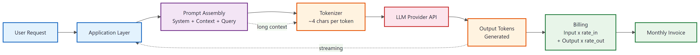

"Revenue minus token costs is the only metric that separates an AI product from an expensive hobby."
Deploy, Margin Obsessed AI Agent
Shipping an AI product is not just an engineering milestone; it is an economics milestone. Every prompt, every retrieved passage, and every verbose answer carries a dollar cost measured in tokens. At the same time, regulatory frameworks like the EU AI Act and security standards like the OWASP LLM Top 10 impose constraints that shape what you can build, where you can deploy, and how you must document your system. This section equips you with the financial models, deployment decision frameworks, and compliance checklists you need to launch responsibly and sustainably.
Prerequisites
This section assumes you have worked through the Founder's Prototype Loop (Section 45.6) and have a working prototype whose costs you want to quantify. Familiarity with evaluation (Chapter 34), observability (Chapter 34: Evaluation), and production engineering (Chapter 35) will make the cross-references especially useful.
35.1.1 Billing Physics: How Tokens Become Dollars
Token-based pricing means that every design decision in your AI product has a direct financial consequence. Context window size, retrieval chunk count, output verbosity, and even whether you use a system prompt all affect your cost per request. Understanding the "billing physics" of LLM APIs is essential before you commit to a pricing model or sign a launch budget.

Before you show your prototype to stakeholders, calculate the per-request cost at your expected volume. Multiply input tokens by the input price, output tokens by the output price, and add retrieval and tool call overhead. A prototype that costs $0.12 per request looks impressive until you realize your product handles 50,000 requests per day, making it a $6,000 daily expense before you count infrastructure. If the unit economics do not work at launch volume, you need to know that before the excitement of a successful demo locks in architectural decisions.
Four forces drive your per-request cost:
- Input tokens. Your system prompt, conversation history, retrieved documents, and user message all count as input tokens. Providers typically charge less for input than output, but input volume accumulates fast when you include RAG context (recall the retrieval patterns from Chapter 23).
- Output tokens. The model's response. Verbose, multi-paragraph answers cost more than terse, structured outputs. A product that generates 500-token answers costs five times more per response than one that generates 100-token answers.
- Model tier. Frontier models (GPT-4o, Claude Opus, Gemini Ultra) cost 10 to 50 times more per token than smaller models (GPT-4o-mini, Claude Haiku, Gemini Flash). Choosing the right model for each task is the single largest cost lever you control.
- Cache and batch discounts. Most providers offer prompt caching (reuse of repeated prefixes at reduced cost) and batch APIs (asynchronous processing at 50% discount). Designing your architecture to exploit these discounts can cut costs dramatically. See the production engineering patterns in Chapter 35 for implementation details.
UX choices are cost choices. A "chatty" assistant that writes five paragraphs when one sentence would suffice does not just annoy users; it multiplies your token bill. Conversely, a concise assistant that uses structured output and targets 100 tokens per response can serve 5x more users on the same budget. Treat output verbosity as a product design decision with direct P&L impact.
The following calculator estimates per-request and monthly costs for a typical AI product. It models a conversation turn with system prompt, retrieved context, user message, and assistant response.
# Token cost calculator: estimates per-request and monthly costs
# for an LLM-powered product based on usage parameters
from dataclasses import dataclass
@dataclass
class ModelPricing:
"""Pricing per million tokens (USD) for a single model tier."""
name: str
input_cost_per_m: float # USD per 1M input tokens
output_cost_per_m: float # USD per 1M output tokens
cached_input_per_m: float # USD per 1M cached input tokens
# Representative pricing as of early 2026 (check provider pages for current rates)
MODELS = {
"frontier": ModelPricing("Frontier (e.g. GPT-4o, Claude Sonnet)", 2.50, 10.00, 1.25),
"mid": ModelPricing("Mid-tier (e.g. GPT-4o-mini, Claude Haiku)", 0.25, 1.00, 0.125),
"small": ModelPricing("Small (e.g. Gemini Flash, local 8B)", 0.075, 0.30, 0.04),
}
@dataclass
class UsageProfile:
"""Describes a single conversation turn's token footprint."""
system_prompt_tokens: int = 800
retrieved_context_tokens: int = 2000
user_message_tokens: int = 150
output_tokens: int = 300
cache_hit_rate: float = 0.0 # fraction of input that hits cache
def estimate_cost(profile: UsageProfile, model: ModelPricing) -> dict:
"""Calculate per-request and projected monthly cost."""
total_input = (
profile.system_prompt_tokens
+ profile.retrieved_context_tokens
+ profile.user_message_tokens
)
cached = int(total_input * profile.cache_hit_rate)
uncached = total_input - cached
input_cost = (uncached / 1_000_000) * model.input_cost_per_m
cache_cost = (cached / 1_000_000) * model.cached_input_per_m
output_cost = (profile.output_tokens / 1_000_000) * model.output_cost_per_m
per_request = input_cost + cache_cost + output_cost
return {
"model": model.name,
"input_tokens": total_input,
"output_tokens": profile.output_tokens,
"per_request_usd": round(per_request, 6),
"monthly_10k_usd": round(per_request * 10_000, 2),
"monthly_100k_usd": round(per_request * 100_000, 2),
"monthly_1m_usd": round(per_request * 1_000_000, 2),
}
# Example: a RAG assistant with moderate context
profile = UsageProfile(
system_prompt_tokens=800,
retrieved_context_tokens=2000,
user_message_tokens=150,
output_tokens=300,
cache_hit_rate=0.6, # system prompt + common prefixes cached
)
print("=" * 65)
print(f"{'Token Cost Estimates':^65}")
print(f"{'Input: ' + str(profile.system_prompt_tokens + profile.retrieved_context_tokens + profile.user_message_tokens) + ' tokens | Output: ' + str(profile.output_tokens) + ' tokens':^65}")
print(f"{'Cache hit rate: ' + str(int(profile.cache_hit_rate * 100)) + '%':^65}")
print("=" * 65)
for key, model in MODELS.items():
result = estimate_cost(profile, model)
print(f"\n{result['model']}")
print(f" Per request: ${result['per_request_usd']:.6f}")
print(f" 10K req/month: ${result['monthly_10k_usd']:>10.2f}")
print(f" 100K req/month: ${result['monthly_100k_usd']:>10.2f}")
print(f" 1M req/month: ${result['monthly_1m_usd']:>10.2f}")UsageProfile parameters to match your product's actual token footprint.Who: The CTO of a customer-support startup processing 100,000 conversations per month, each averaging 4 turns.
Situation: The initial architecture sent every turn to a frontier model at $0.005 per turn, producing a monthly LLM bill of $2,000. With Series A runway dwindling, the board asked the CTO to cut infrastructure costs without degrading customer satisfaction scores.
Problem: Roughly 80% of conversations were routine (password resets, order status checks, FAQ lookups) that did not require frontier-model reasoning, yet they consumed the same per-turn cost as complex escalations.
Decision: The CTO implemented a model routing strategy: a lightweight classifier routed routine queries to a mid-tier model at $0.0005 per turn, escalating only the 20% of conversations requiring nuanced reasoning to the frontier model. This "model routing" strategy is covered in detail in Chapter 31.
Result: The monthly bill dropped from $2,000 to $600, a 70% reduction, with no measurable change in customer satisfaction scores on routine queries.
Lesson: Matching model capability to task complexity is the single highest-leverage cost optimization for most AI products.
35.1.2 Deployment Platform Choices
Where you run your model is as consequential as which model you choose. The decision affects cost, latency, data privacy, compliance posture, and operational complexity. Three primary patterns exist, each with distinct trade-offs.
| Dimension | Managed API | Self-Hosted | Hybrid |
|---|---|---|---|
| Setup time | Minutes (API key) | Days to weeks (GPU provisioning, model serving) | Hours to days (API key + local inference server) |
| Capital cost | Zero upfront | High (GPU hardware or cloud GPU reservations) | Moderate (GPU for local model only) |
| Variable cost | Per-token pricing; scales linearly | Fixed infrastructure; amortized over volume | Mixed: fixed base + per-token overflow |
| Break-even volume | Best below ~500K requests/month | Best above ~2M requests/month | Best at 500K to 2M requests/month |
| Model quality | Access to frontier models (GPT-4o, Claude, Gemini) | Limited to open-weight models (Llama, Mistral, Qwen) | Frontier for complex tasks; open-weight for simple tasks |
| Data residency | Data leaves your network | Data stays on your infrastructure | Sensitive data stays local; non-sensitive uses API |
| Compliance | Depends on provider's certifications | Full control; your responsibility | Segmented: local for regulated data, API for the rest |
| Operational burden | Minimal (provider handles scaling, uptime) | Heavy (GPU management, model updates, scaling) | Moderate (manage local infra + API integration) |
| Latency | Network-dependent; typically 200ms to 2s TTFT | On-premises; sub-100ms possible | Varies by routing decision |
| Best for | Startups, MVPs, low-to-mid volume | Enterprises with strict data controls, high volume | Growing companies balancing cost, quality, and compliance |
The production engineering chapter (Chapter 35) covers the operational details of each deployment model. For most startups, the right answer at launch is a managed API with a migration plan: start with an API provider, instrument your token usage carefully, and evaluate self-hosting once you have enough volume data to calculate whether the infrastructure investment pencils out.
A single NVIDIA H100 GPU can serve roughly 30 to 50 concurrent users running a 70-billion-parameter model with 4-bit quantization. At cloud rental rates of approximately $3 per GPU-hour, that works out to about $0.06 to $0.10 per GPU-hour per user. If each user sends 10 requests per hour, the per-request GPU cost is under $0.01, far below the managed API price for a frontier model. The catch: you need the engineering team to keep that GPU healthy, the model updated, and the serving stack optimized.
35.1.3 Security and Compliance Readiness
Launching an AI product without addressing security and compliance is like shipping a web application without HTTPS: technically possible, practically reckless. Two frameworks deserve particular attention.
35.1.3.1 OWASP LLM Top 10
The OWASP Top 10 for LLM Applications catalogues the most critical security risks specific to LLM-based systems. The risks most relevant at launch time include:
- Prompt injection (LLM01): Adversarial inputs that override your system prompt or manipulate the model into unintended behaviour. Mitigations include input validation, output filtering, and separating trusted instructions from untrusted user input. See the prompt engineering guardrails from Chapter 14.
- Insecure output handling (LLM02): Treating LLM output as trusted data without sanitization. If your product renders model output as HTML, executes it as code, or passes it to a database query, you must sanitize it as rigorously as any user input.
- Sensitive information disclosure (LLM06): Models can leak training data, system prompts, or user data from context. Apply output filtering, redaction patterns, and data classification to prevent accidental exposure.
- Excessive agency (LLM08): Agents with too many permissions or too little oversight can take actions that are expensive, irreversible, or harmful. Apply the principle of least privilege and require human confirmation for high-stakes actions.
35.1.3.2 EU AI Act Applicability
The EU AI Act classifies AI systems by risk tier (unacceptable, high, limited, minimal) and imposes obligations accordingly. Most LLM-based products fall into the "limited risk" category, which requires transparency obligations: users must be informed they are interacting with an AI system. Products that make decisions affecting employment, credit, education, or law enforcement may be classified as "high risk," triggering requirements for conformity assessments, risk management systems, and human oversight. Chapter 37 covers the full regulatory landscape in depth.
Retrofitting security into a shipped product is dramatically more expensive than building it in from the start. Prompt injection mitigations, output sanitization, and access controls should be in your prototype, not your backlog. If your launch readiness checklist does not include a security review, you are not ready to launch.
35.1.4 The Launch Readiness Checklist (Startup Edition)
This checklist distills the most critical pre-launch gates into a single, actionable artifact. Each item points to the chapter where the underlying skill is taught in depth. A startup does not need perfection on every item, but it needs awareness of every item and a deliberate decision about which risks to accept.
| Gate | Requirement | Depth Reference | Status |
|---|---|---|---|
| Evaluation | A golden evaluation set exists with at least 50 cases covering happy paths, edge cases, and adversarial inputs. Pass/fail thresholds are defined. | Chapter 34 | ☐ |
| Observability | Tracing is enabled for every LLM call. A cost dashboard tracks daily token spend and per-request cost. Latency percentiles (p50, p95, p99) are monitored. | Chapter 34 | ☐ |
| Guardrails | Prompt injection mitigations are in place (input validation, system/user message separation). Output sanitization prevents XSS, SQL injection, and data leakage. | Ch 12 + OWASP | ☐ |
| Deployment | Deployment path is chosen (managed API, self-hosted, or hybrid) and documented. Rollback procedure exists. Health checks are automated. | Chapter 35 | ☐ |
| Compliance | Regulatory posture is understood. AI transparency labels are in the UI. Data processing agreements are signed with model providers. Risk tier under EU AI Act (or equivalent) is documented. |
Chapter 37 | ☐ |
| Unit Economics | Per-request cost is measured (not estimated). Monthly cost projection at 2x and 10x current volume is calculated. A cost ceiling with automatic alerting exists. | Chapter 31 | ☐ |
| Fallback | Graceful degradation path exists for provider outages (backup model, cached responses, or "service temporarily unavailable" UX). | Chapter 35 | ☐ |
| User Feedback | A feedback mechanism (thumbs up/down, report, or correction flow) is integrated into the UI. Feedback data is stored and accessible for analysis. | Chapter 34 | ☐ |
The following code generates a machine-readable version of this checklist that you can integrate into your CI/CD pipeline or project management tool.
# Launch readiness checklist generator
# Produces a structured checklist with status tracking and references
import json
from datetime import datetime
CHECKLIST = [
{
"gate": "Evaluation",
"requirement": "Golden eval set with 50+ cases; pass/fail thresholds defined",
"reference_chapter": 29,
"status": "not_started", # not_started | in_progress | done | accepted_risk
"notes": "",
},
{
"gate": "Observability",
"requirement": "Tracing enabled; cost dashboard; latency percentiles monitored",
"reference_chapter": 30,
"status": "not_started",
"notes": "",
},
{
"gate": "Guardrails",
"requirement": "Prompt injection mitigations; output sanitization",
"reference_chapter": 11,
"status": "not_started",
"notes": "",
},
{
"gate": "Deployment",
"requirement": "Deployment path chosen; rollback procedure; health checks",
"reference_chapter": 31,
"status": "not_started",
"notes": "",
},
{
"gate": "Compliance",
"requirement": "Regulatory posture documented; AI transparency labels in UI",
"reference_chapter": 32,
"status": "not_started",
"notes": "",
},
{
"gate": "Unit Economics",
"requirement": "Per-request cost measured; projections at 2x and 10x volume",
"reference_chapter": 33,
"status": "not_started",
"notes": "",
},
{
"gate": "Fallback",
"requirement": "Graceful degradation for provider outages",
"reference_chapter": 31,
"status": "not_started",
"notes": "",
},
{
"gate": "User Feedback",
"requirement": "Feedback mechanism integrated; data stored for analysis",
"reference_chapter": 29,
"status": "not_started",
"notes": "",
},
]
def generate_checklist(product_name: str) -> dict:
"""Create a timestamped launch readiness checklist."""
return {
"product": product_name,
"created": datetime.now().isoformat(),
"gates": CHECKLIST,
"summary": {
"total": len(CHECKLIST),
"done": sum(1 for g in CHECKLIST if g["status"] == "done"),
"accepted_risk": sum(1 for g in CHECKLIST if g["status"] == "accepted_risk"),
"blocking": sum(1 for g in CHECKLIST if g["status"] in ("not_started", "in_progress")),
},
}
checklist = generate_checklist("My AI Product")
print(json.dumps(checklist, indent=2))status field for each gate as you progress toward launch.Who: Two co-founders at an early-stage startup preparing to launch a legal document summarizer.
Situation: The founders ran through the launch readiness checklist and found four gates green: evaluation "done" (80 golden test cases), guardrails "done" (input validation and output filtering deployed), compliance "accepted risk" (US-only operations, EU AI Act documented as not applicable), and unit economics "done" ($0.003 per summary, sustainable at their pricing).
Problem: One gate was amber: observability was "in progress." Tracing worked, but the cost dashboard was not yet automated, meaning a sudden cost spike would go undetected until the monthly invoice arrived.
Decision: The founders chose to launch with the observability gap documented as a week-one sprint item, accepting the short-term risk in exchange for reaching their first paying customers sooner.
Result: The product launched on schedule. The cost dashboard was automated by day five. No cost anomalies occurred in the interim, but the checklist ensured the team had a concrete mitigation timeline rather than an open-ended "we'll get to it."
Lesson: A launch checklist turns invisible gaps into explicit, time-bound risks that the team can consciously accept or reject.
35.1.5 Cost Optimization Strategies
Once you have measured your baseline costs, several strategies can reduce them without sacrificing quality. These strategies are not mutually exclusive; the most cost-efficient products combine all of them.
- Model routing. Use a lightweight classifier to determine whether a request needs a frontier model or can be handled by a cheaper one. Routine questions (FAQs, simple lookups) go to the small model; complex reasoning goes to the frontier. The strategy chapter (Chapter 31) covers routing architectures in detail.
- Prompt caching. If your system prompt and common retrieval context are stable across requests, prompt caching can reduce input costs by 50% or more. Design your prompt architecture so the cacheable prefix is as large as possible.
- Output length control. Use
max_tokenslimits and explicit instructions like "Answer in under 100 words" to constrain output length. Shorter outputs cost less and are often more useful to users. - Batch processing. For non-real-time workloads (nightly report generation, bulk classification), use batch APIs that offer 50% discounts. Structure your pipeline to accumulate requests and submit them in batches.
- Context pruning. Not every retrieved passage is equally relevant. Rank and truncate your retrieval results aggressively. Sending four highly relevant chunks costs half as much as sending eight moderately relevant chunks, and often produces better answers.
Agentic workflows are particularly expensive because each reasoning step, tool call, and observation consumes tokens. A five-step agent loop with 2,000 tokens per step on a frontier model can cost $0.05 to $0.15 per interaction. Before deploying an agent, calculate the expected loop depth and set a hard token budget. If the agent exceeds its budget, force a graceful exit with a partial result rather than allowing runaway costs.
- Token costs are a first-order design constraint. Every UX decision (context size, output verbosity, model tier) has a direct dollar impact. Measure per-request cost early and continuously.
- Deployment platform choice affects far more than cost. Data residency, compliance posture, operational burden, and model quality all depend on whether you choose managed APIs, self-hosting, or a hybrid approach.
- Security and compliance are launch-blocking, not post-launch. Prompt injection mitigations, output sanitization, and regulatory awareness must be addressed before you ship, not after an incident forces you to.
- The Launch Readiness Checklist makes risk visible. Even a startup that cannot satisfy every gate benefits from explicit awareness of what risks it is accepting and a plan to address them.
- Cost optimization is a continuous practice. Model routing, prompt caching, output length control, batch processing, and context pruning compound to reduce costs by 50 to 80% without quality loss.
Exercises
Your product makes 50,000 LLM calls per day. Each call uses ~2,000 input tokens and produces ~500 output tokens, on a frontier model priced at $5/M input, $15/M output. (a) Daily cost. (b) Annual cost. (c) Switching the bottom 80% of calls to a model 10x cheaper while keeping the top 20% on the frontier model: what is the new annual cost?
Answer Sketch
(a) Daily input tokens: 50,000 x 2000 = 100M -> $500. Daily output tokens: 50,000 x 500 = 25M -> $375. Daily cost: $875. (b) Annual: $875 x 365 = ~$320K. (c) Top 20% (10,000 calls/day) at the frontier rate cost ~$175/day = ~$64K/year. Bottom 80% at 10x cheaper costs $700/day x 0.1 = $70/day = ~$25K/year. New annual total: ~$89K, a savings of ~$230K (72%). Tiering is the highest-leverage cost lever in LLM products; the math almost always supports doing it before optimizing prompt length or caching.
For each scenario, predict whether self-hosting open weights or paying API rates is cheaper at steady state, and identify the dominant variable: (a) 100K daily requests of a 70B-class model; (b) 1M daily requests of a 7B model; (c) 10K daily requests of a 405B model.
Answer Sketch
(a) 70B at 100K/day: borderline. API costs ~$30K-$60K/month at moderate prompt sizes. Self-hosting needs ~4-8 H100s (rented at ~$2/hr each = $5K-$10K/month) but requires devops, monitoring, and idle-time waste. API typically wins until 500K+/day. Dominant variable: utilization. (b) 7B at 1M/day: self-hosting wins decisively. A single H100 can serve thousands of QPS for small models; API costs scale linearly while infra costs are flat. Dominant variable: per-token cost ratio at scale. (c) 405B at 10K/day: API wins. Hosting 405B requires multi-GPU with high-end interconnect; idle cost dominates at 10K/day. Dominant variable: model size (memory and parallelism overhead). The general rule: small + high-volume = self-host; large + low-volume = API.
Sketch a 10-line Python middleware that wraps every LLM call to record (model, input_tokens, output_tokens, dollar_cost) and emits a per-day rollup. State the metric you would alert on.
Answer Sketch
PRICE = {"gpt-4o": (5, 15), "haiku": (0.25, 1.25), "llama-3-70b": (0.7, 0.9)} # $/M tokens
def cost(model, in_t, out_t):
i, o = PRICE[model]
return (in_t * i + out_t * o) / 1_000_000
def call(model, prompt):
r = llm.chat(model, prompt)
c = cost(model, r.usage.input_tokens, r.usage.output_tokens)
db.insert({"model": model, "in_t": r.usage.input_tokens, "out_t": r.usage.output_tokens, "cost": c, "ts": now()})
return rAlert metric: 7-day moving average daily spend, with an alert at +30% week-over-week. This catches both genuine traffic growth and runaway-cost bugs (an upstream change that suddenly sends 10x more tokens to the frontier model). Pair with a per-feature cost dashboard so you know which feature exploded.
Three startups launch AI products with the same per-call cost but different unit economics. List three failure modes that destroy the unit economics post-launch and the metric that would have caught each early.
Answer Sketch
(1) Free-tier abuse: a fraction of users hammer the API; per-user cost balloons. Metric: cost-per-user p99/p50 ratio. If p99 is 100x p50, you have a few users absorbing most of the spend; rate-limit them. (2) Engagement-driven cost growth: as users get more value, they make more calls; revenue stays flat (subscription) but cost rises. Metric: cost-per-active-user trend; if rising faster than revenue-per-user, you have a margin death spiral. Fix: usage caps or tiered pricing. (3) Hidden retry storms: a transient model error triggers automated retries from your client SDK and from a downstream service; one user click costs 10x the expected. Metric: retry ratio per call. If >1.2, find and break the duplicate-retry loop. The recurring lesson: launch with cost-per-user dashboards, not just total spend.
What Comes Next
With your launch constraints mapped and your economics modeled, Section 48.2: AI Copilots Across the Lifecycle shows you how to use AI assistants throughout the entire product development lifecycle, from ideation through iteration.
Show Answer
Show Answer
Show Answer
Bibliography and Further Reading
Sculley, D., et al. (2015). "Hidden Technical Debt in Machine Learning Systems." NeurIPS 2015.
The seminal paper on ML systems debt, covering configuration debt, data dependencies, and monitoring gaps. Its lessons about hidden costs in production ML systems apply directly to the launch economics and ongoing operational expenses discussed in this section. Required reading for any team budgeting an AI product launch.
Empirical evidence that model behaviour drifts silently across provider updates. Relevant to the deployment platform decision in this section: teams relying on managed APIs must budget for ongoing re-evaluation costs even when they do not change their own code.
OWASP Foundation. (2024). "OWASP Top 10 for LLM Applications." OWASP.
The authoritative security risk catalogue for LLM-based systems, covering prompt injection, insecure output handling, sensitive data disclosure, and excessive agency. Directly referenced in this section's security checklist. Security engineers and product owners should use this as a pre-launch audit framework.
The full regulatory text of the EU AI Act, which classifies AI systems by risk tier and imposes transparency and conformity obligations. Teams launching AI products in the EU or serving EU users must understand the risk classification framework and its implications for their launch timeline.
The foundational reference for experimentation in production systems. While focused on traditional A/B testing, its frameworks for cost-benefit analysis and sample sizing adapt well to the AI product launch decisions discussed here. Product managers should consult this when designing launch experiments.